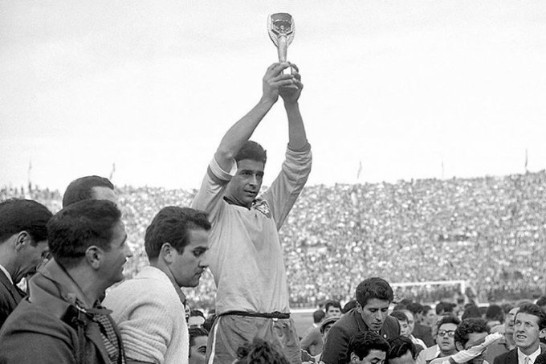
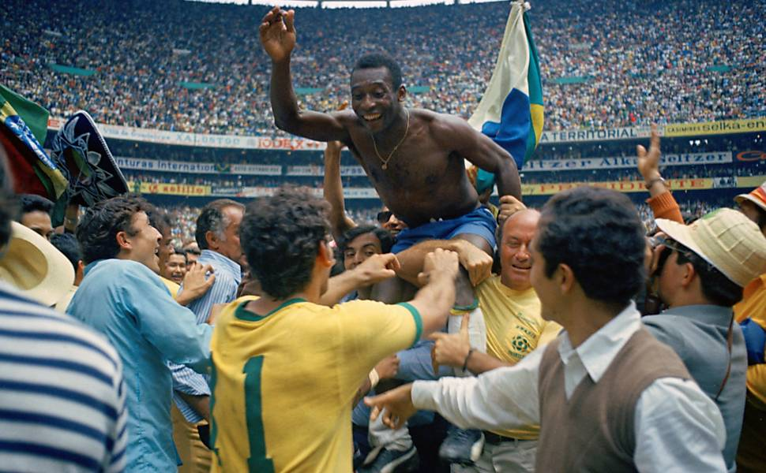
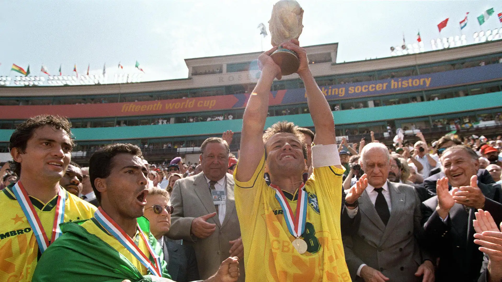
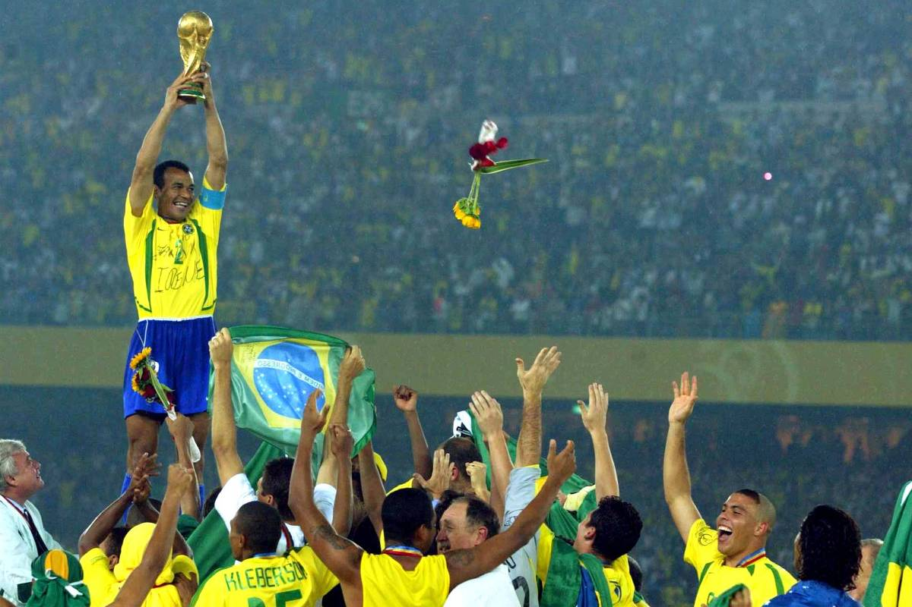

COPA DE 1958
A Copa do Mundo de 1958, realizada na Suécia, marcou o primeiro título mundial da Seleção Brasileira. Com um futebol ofensivo e envolvente, o Brasil encantou o mundo e venceu a anfitriã Suécia por 5 a 2 na grande final. Foi nessa edição que Pelé, com apenas 17 anos, brilhou ao lado de Garrincha, Didi, Vavá e Zagallo, iniciando uma das maiores histórias do futebol. A conquista colocou o Brasil no topo do esporte mundial e deu início à tradição da camisa amarelinha como símbolo de excelência.

COPA DE 1962

Quatro anos depois, no Chile, o Brasil conquistou o bicampeonato mundial. Mesmo com a lesão de Pelé ainda na fase de grupos, a equipe mostrou sua força coletiva e contou com atuações inesquecíveis de Garrincha, considerado o grande craque do torneio. Na final, a Seleção venceu a Tchecoslováquia por 3 a 1 e confirmou seu domínio no futebol mundial. O título provou que o Brasil possuía uma geração extraordinária, capaz de superar qualquer desafio.
COPA DE 1970
A Copa de 1970, no México, é lembrada por muitos como a maior exibição de futebol já vista em uma Copa do Mundo. Liderada por Pelé e repleta de craques como Jairzinho, Rivellino, Tostão, Gérson e Carlos Alberto Torres, a Seleção encantou o planeta. O Brasil venceu a Itália por 4 a 1 na final, conquistando o tricampeonato e ficando em definitivo com a Taça Jules Rimet. Esse time entrou para a história como um dos melhores de todos os tempos.

COPA DE 1994

Após 24 anos sem conquistar uma Copa do Mundo, o Brasil voltou a ser campeão nos Estados Unidos. A equipe era muito equilibrada, com destaque para Romário, Bebeto, Dunga e Taffarel. Pela primeira vez, uma final foi decidida nos pênaltis, após empate sem gols contra a Itália. Com a defesa de Taffarel e o erro de Roberto Baggio, a Seleção conquistou o tetracampeonato. O título marcou o retorno do Brasil ao lugar mais alto do futebol mundial.
COPA DE 2002
Na Copa do Mundo de 2002, disputada na Coreia do Sul e no Japão, o Brasil fez uma campanha perfeita, vencendo todos os sete jogos. Com o famoso trio Ronaldo, Rivaldo e Ronaldinho Gaúcho, a Seleção apresentou um futebol ofensivo e eficiente. Na final, Ronaldo marcou os dois gols da vitória por 2 a 0 sobre a Alemanha, tornando-se o artilheiro do torneio. O pentacampeonato consolidou o Brasil como a maior seleção da história das Copas do Mundo, feito que permanece único até hoje.

EM BUSCA DO HEXA
Cinco estrelas já brilham no peito da Seleção Brasileira, cada uma representando uma conquista inesquecível. Agora, o sonho de milhões de brasileiros é conquistar a sexta Copa do Mundo e escrever mais um capítulo dessa história vitoriosa. O hexa representa a continuidade da tradição, da paixão pelo futebol e da esperança de ver novamente o Brasil no lugar mais alto do mundo.